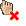

Для перемещения окна с одной вкладки на другую
поместите курсор на заголовок окна, нажмите кнопку «Ctrl». Удерживая левую
кнопку мыши и кнопку «Ctrl», переместите окно на нужную вкладку (во время перемещения курсор принимает вид ). При этом вкладка выделяется цветом, и курсор меняет вид на .
Отпустите левую кнопку мыши.
Если курсор имеет вид , то перемещение окна на вкладку невозможно.
Добавить инструменты можно из/в следующие таблицы:
Поместите курсор на строку с выбранным
инструментом. Нажмите на левую кнопку мыши и, удерживая эту кнопку,
перемещайте курсор в нужную таблицу. При перемещении курсор принимает вид . Если возможно добавление инструмента в данную таблицу, то вид курсора меняется на , и появляется
окно с названием инструмента. Отпустите левую кнопку мыши, строка с новым инструментом добавится в указанное подчеркиванием место таблицы.
Если вид курсора остается , то добавление инструмента невозможно.
Повторное добавление в таблицу одного
и того же инструмента невозможно. Для добавления инструмента в таблицу, расположенную на другой вкладке, необходимо навести курсор (удерживая выбранный инструмент) на нужную вкладку, подождать, пока произойдет переключение на выбранную вкладку, и добавить
инструмент в таблицу.
Удалить инструмент можно из следующих таблиц:
Для удаления поместите курсор на выбранный инструмент, нажмите на левую кнопку мыши и, удерживая эту кнопку, переместите курсор за пределы таблицы, отпустите левую кнопку мыши. На экране появляется курсор вида  и окно с названием удаляемого инструмента.
Подтверждение при удалении инструмента запрашивается в случае, если установлен флажок «Запрашивать подтверждение при удалении объектов с помощью drag-and-drop» в меню Система/Настройки/Основные настройки..., раздел «Окна» / «Таблицы».
Для замены инструмента в таблице котировок выберите инструмент из следующих таблиц:
Поместите курсор на выбранный инструмент, нажмите на левую кнопку мыши и, удерживая эту кнопку, переместите курсор с выбранным инструментом в таблицу котировок, отпустите кнопку мыши.
На экране появляется курсор вида и окно с названием заменяемого инструмента.
Заголовок окна таблицы котировок изменится на «Краткое название инструмента [Название класса] Котировки №».
Подтверждение при замене инструмента запрашивается в случае, если установлен флажок «Запрашивать подтверждение при удалении объектов с помощью drag-and-drop» в меню Система/Настройки/Основные настройки..., раздел «Окна» / «Таблицы».
Для замены инструмента в таблице котировок,
расположенной на другой вкладке, необходимо навести курсор (удерживая выбранный инструмент) на нужную вкладку, подождать, пока произойдет переключение на выбранную вкладку и переместить инструмент в таблицу котировок.
Изменение порядка столбцов и их удаление из таблицы доступно, если установлен флажок «Перемещать и удалять колонки таблицы с помощью drag-and-drop» в меню Система/Настройки/Основные настройки..., раздел «Окна» / «Таблицы».
Для изменения порядка столбцов, поместите курсор
на заголовок столбца, нажмите на левую кнопку мыши и, удерживая
эту кнопку, переместите курсор с выделенным столбцом в нужное место
в таблице на заголовок столбца. На экране появляется курсор вида ,
и окно названием выделенного столбца. Отпустите кнопку мыши, и столбец добавится в указанное подчеркиванием место таблицы.
Для удаления поместите курсор на заголовок
столбца, нажмите на левую кнопку мыши и, удерживая эту кнопку,
переместите курсор за пределы таблицы. На экране появляется курсор вида
и окно с названием удаляемого столбца. Отпустите левую кнопку мыши.
Подтверждение при удалении столбца таблицы запрашивается в случае, если установлен флажок «Запрашивать подтверждение при удалении объектов с помощью drag-and-drop» в меню Система/Настройки/Основные настройки..., раздел
«Окна» / «Таблицы».
Изменять порядок строк можно в следующих таблицах:
Для таблицы «Купить/Продать» изменить порядок строк
невозможно, если набор инструментов сформирован автоматически, а не с помощью
опции «Выбрать инструменты вручную». Поместите курсор на строку, нажмите на левую кнопку мыши
и, удерживая эту кнопку, переместите курсор в выбранную область таблицы. На экране появляется курсор вида и окно с названием перемещаемого инструмента. Отпустите
левую кнопку мыши, строка переместится в указанное подчеркиванием место таблицы.
Перемещение окон между вкладками
Добавление инструментов в таблицы
Удаление инструмента из таблицы
Замена инструмента в таблице котировок
Изменение порядка столбцов и их удаление из таблицы
Изменение порядка строк в таблице